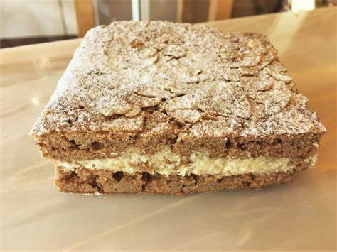

Ten eerste staat kwaliteit bij ons voorop. We selecteren zorgvuldig de fijnste ingredienten om ervoor te zorgen dat elk stuk drooggebak dat onze bakkerij verlaat, van de hoogste kwaliteit is. Van de beste chocolade tot de meest verse noten, we compromitteren nooit als het op ingredienten aankomt. Wat ons echt onderscheidt, is onze creativiteit. Onze getalenteerde patissiers zijn voortdurend bezig met het bedenken van nieuwe en verrassende creaties. Of het nu gaat om decadente brownies, knapperige koekjes of delicate petit fours, we streven altijd naar vernieuwing en originaliteit in ons drooggebak. De smaakbeleving van onze klanten staat centraal in alles wat we doen. We begrijpen dat drooggebak niet alleen lekker moet zijn, maar ook een visuele traktatie moet bieden. Onze gebakjes en koekjes zijn met aandacht voor detail ontworpen, zodat elke hap een feest voor de zintuigen is. Bovendien geloven we sterk in traditie. Onze recepten zijn vaak generaties lang doorgegeven en koesteren de ambachtelijke technieken die leiden tot onvergetelijke smaken. Het gebruik van natuurlijke smaakmakers en de perfecte balans van texturen maken ons drooggebak echt uniek. In onze bakkerij draait het om passie voor het vak en de vreugde van het delen van heerlijke lekkernijen met onze klanten. Ik nodig je graag uit om zelf te proeven waarom ons drooggebak zo wordt gewaardeerd. Bij elke hap zul je de liefde en toewijding proeven die we in elk stuk drooggebak steken.
